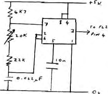

Cheap Printout 1
by Mark Horsman
Having the usual need for cheap hardcopy, I thought myself a
Creed 75R for about £20.
“Great.”, I thought, “Now how do I drive the thing?”
Personal Computer World, May 80
and Practical Computing,
July 80 both had articles using one bit of a parallel port to
output the 5 bit Baudot code, shifting one bit out at a time and
generating the start and stop bits. This meant various timing
loops that needed trimming, seemingly depending on the weather,
not the most elegant solution, so I looked at the UART. In the
Nascom 2 this is configured for 8 bit use only but is capable of
5, 6, 7 and 8 bit use depending on the voltages on pins 37 and
38. Surgery is called for. Cut he track between pins 39 and
38, cut the track between pins 37 and 35, join pins 39 and 35
with a short length of fine wire and add a 1K resistor between
pin 1 and pins 37 and 38. This leaves us still in 8 bit mode.
Now add a switch between pin 38 and ground such that when open
we have 8 bits but when closed we have 5 bit mode. Next we need
a circa 16 x 50Hz clock to drive the UART. This is generated
with a 7555 (CMOS 555 timer) using a multiturn pot to trim the
frequency. This is wired to PL2 pin 4 or TP4. The output is
taken from PL2 pin 12 (20mA Loop Out).
Finally, the software. This uses a lookup table, a flag to
determine whether letters or figures last sent and a routine to
convert such as > to .GT., etc.
P.S. If you live in a terraced house, move – the noise is
horrendous.
TTY Baud Generator

IC = 7555